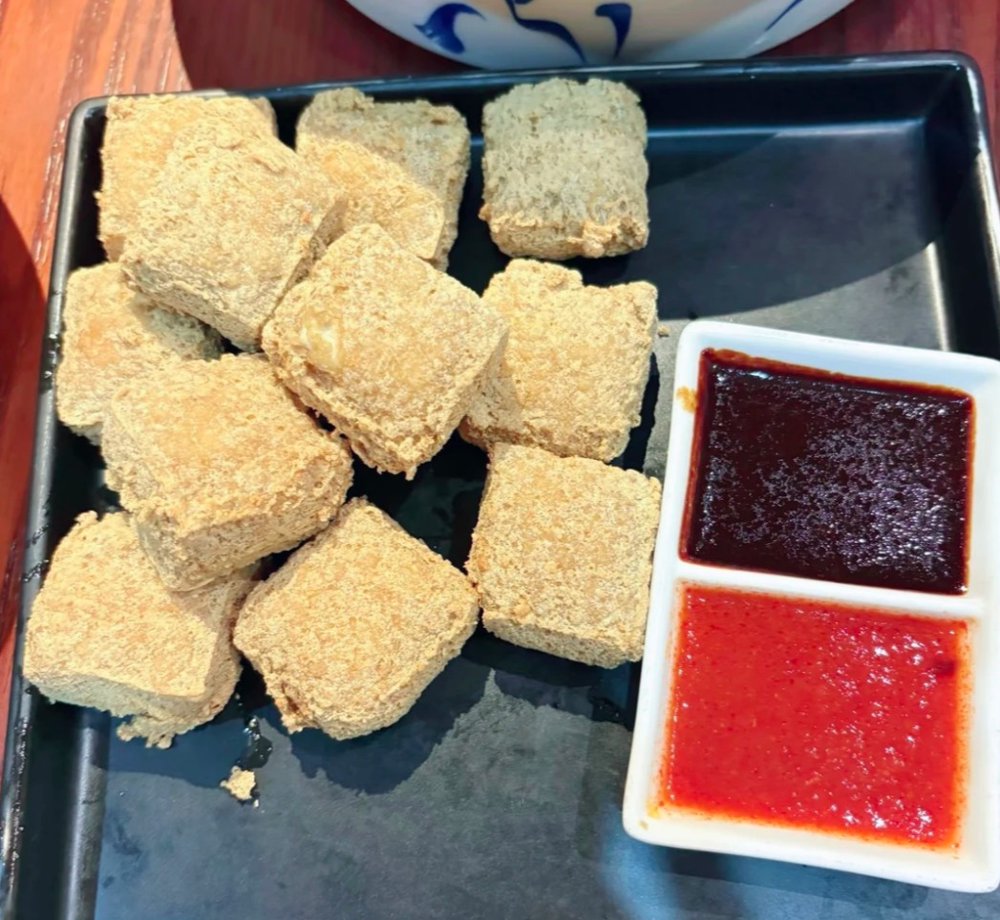
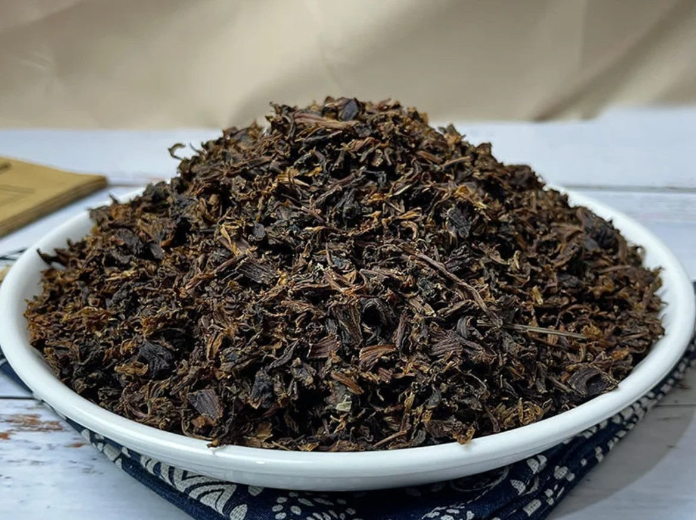
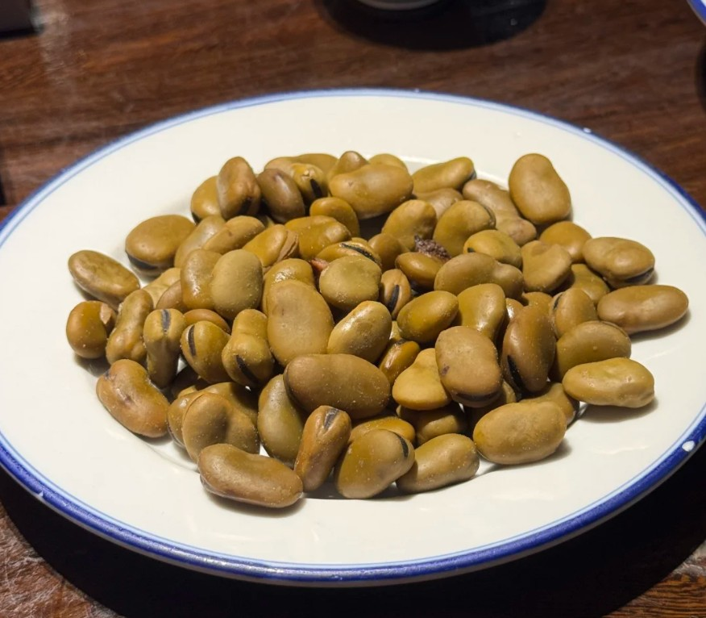
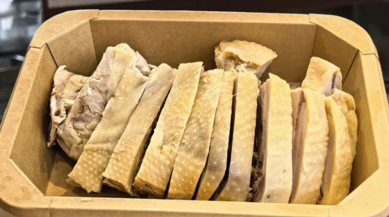
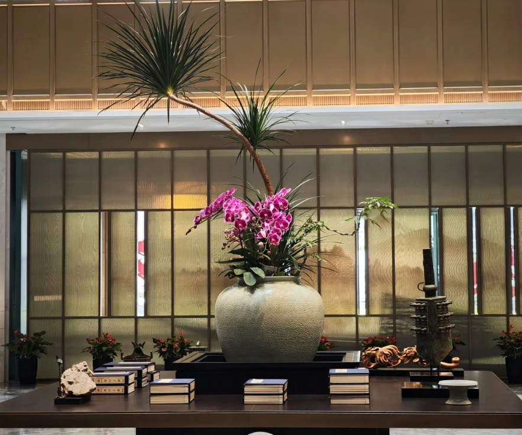
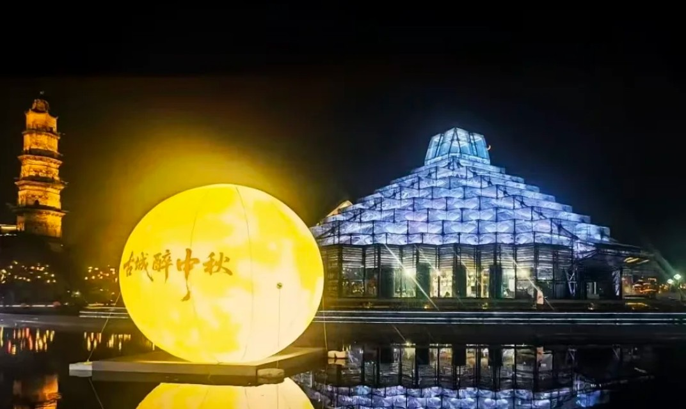

鲁迅先生的故乡，保存完好的明清建筑群，是了解绍兴文化的窗口。
大禹治水的圣地，华夏始祖陵寝，历史悠久，庄严肃穆。
被誉为"天下第一水石盆景"，山水相映，风景如画。
明代才子徐渭的故居，青藤书屋，文人雅士必访之地。
心学大师王阳明的故居，感悟知行合一的哲学圣地。
王羲之书写《兰亭集序》的地方，书法圣地。
中国经典古法黄酒，色泽透亮温润，香气绵长醇厚，是绍兴标志性特产，可饮用也能入菜。

绍兴街头经典小吃，外皮炸至金黄酥脆，内里软嫩，蘸甜辣酱食用，闻着微臭入口鲜香。

绍兴传统腌晒干货，鲜菜经发酵晒干制成，咸香浓郁，搭配扣肉炖煮风味一绝。

鲁迅笔下特色小吃，蚕豆加茴香、桂皮卤制入味，软糯咸香，是下酒休闲小食。

酒糟卤制特色冷菜，鸡肉紧实鲜嫩，裹挟醇厚酒香，清爽不腻，江南宴席常备。
黄酒慢腌浸润而成，鸡肉酒香浸透，肉质软嫩回甘，是绍兴家喻户晓的冷盘美味。

坐落绍兴城区核心地段，配套恒温泳池、高端宴会厅，客房宽敞雅致，适合商务出行与家庭度假。
藏身江南园林之中，白墙亭台古色古香，兼具历史底蕴与舒适客房，沉浸式体验古城韵味。

中式庭院特色精品酒店，静谧清幽，配套茶室休闲区域，短途休闲旅居优选。
🤖 欢迎咨询智能旅游助手！
我可以为您推荐：
智能体功能开发中，敬请期待！